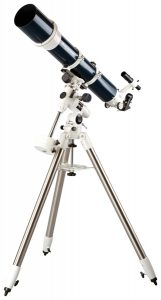

ISAC NEWTON
Penemuan Terbesar
Penemuan
Teleskp Newton
Isaac Newton melakukan analisa tentang akibat-akibat hukum pemantulan dan pembiasan cahaya. Pada tahun 1704, Issac Newton mengumumkan konsep baru dalam desain dasar teleskop. Newton menyatakan bahwa lensa dapat memecah cahaya putih menjadi spektrum cahaya berwarna yang menyebabkan lenturan kromatik. Newton menghindari masalah tadi dalam teleskop rancangannya, solusi yang diberikannya adalah dengan memakai cermin yang melengkung, yang apabilan digunakan untuk mengumpulkan sinar maka akan memancarkan kembali ke titik fokusnya. Perkembangan teleskop sangat berbanding lurus pada perkembangan perhitungan gerak benda-benda langit dan hubungan antara satu dan yang lainnya. Berpegang pada hukum ini, pada tahun 1668 ia mulai merancang sekaligus membangun teropong refleksi pertama, model teropong yang dipergunakan oleh sebagian terbesar penyelidik bintang saat ini. Penemuan ini, berbarengan dengan hasil-hasil yang diperolehnya di bidang percobaan optik yang sudah diperagakannya, dipersembahkan olehnya kepada lembaga peneliti kerajaan Inggris tatkala ia berumur dua puluh sembilan tahun. Keberhasilan Newton di bidang optik saja mungkin sudah memadai untuk mendudukkan Newton pada urutan daftar 100 orang paling berpengaruh di dunia. Sementara itu masih ada penemuan-penemuan yang kurang penting di bidang matematika murni dan di bidang mekanikaPosted by Dafa  Read more
Read more  Comments (15)
Comments (15)  17.01.
17.01.
3 jenis Teleskop
Refraktor, Reflektor, katadioptri
1. Teleskop Refraktor Teleskop refraktor merupakan jenis teleskop yang pertama kali ditemukan di dunia dari ketiga jenis teleskop yang ada. Teleskop refraktor menggunakan lensa sebagai media untuk mengumpulkan cahaya. Umumnya teleskop refraktor menggunakan dua buah lensa utama yaitu lensa objektif yang diletakkan di bagian depan tabung teleskop dan lensa okuler yang berada di bagian belakang tabung teleskop. Teleskop jenis inilah yang sering menjadi asumsi bagi kebanyakan orang tentang bentuk teleskop itu sendiri. Salah satu kelebihan yang dimiliki oleh teleskop refraktor terletak pada kemampuannya memisahkan dua objek yang berada dikejauhan. Sebagai contoh pada pengamatan bintang ganda Alpha Centauri. Posted by Jack Read more Comments (15) 17.01.
Last Comments